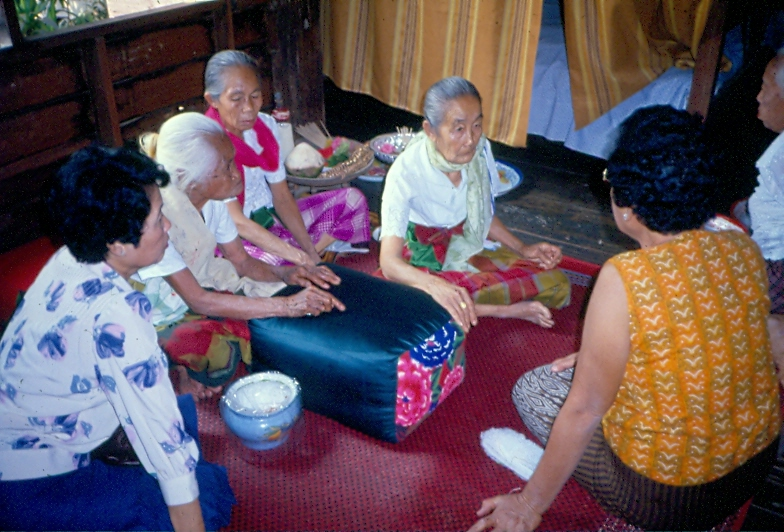

ผีกะ
ผีชนิดหนึ่งที่สืบต่อกันมาทางสายตระกูล คนสมัยก่อนมักเลี้ยงผีกะไว้เพื่อ
คุ้มครองคนในครัวเรือน ผีกะชอบกินของคาวโดยเจ้าของผีกะจะเอาผีใส่ไว้ใน
หม้อดินเผา จากนั้นจึงใส่ปลาร้า พริก ข่า ตะไคร้ ลงไปในหม้อดินนั้นแล้วปิด
ปากหม้อด้วยผ้าแล้วผูกด้วยเชือก เชื่อกันว่า ถ้าเจ้าของเลี้ยงดูเอาใจใส่อย่าง
ดี ผีกะจะให้คุณนำความเจริญมาให้เจ้าของ แต่ถ้าเจ้าของปล่อยปละละเลย
ให้ผีกะอดอยาก ผีกะจะเที่ยวออกหากินและเข้าสิงร่างคนอื่น เมื่อถูกจับได้ก็จะบอก
ชื่อผู้เป็นเจ้าของ ทำให้เจ้าของอับอายขายหน้า ด้วยเหตุนี้เจ้าของผีกะจึงต้องทำพิธี
เลี้ยงผีกะเป็นประจำทุก ๆ ปี หรืออย่างน้อยก็ 3 ปีต่อครั้ง หากผีกะกล้าแข็งมากขึ้น
ก็จะกลายเป็นผีม้าบ้อง

ผีปู่ย่า
เป็นผีบรรพบุรุษของคนล้านนา มีหน้าที่คอยดูแลปกปักษ์รักษาลูกหลาน
ผีปู่ย่าจะอาศัยอยู่ที่บ้านต้นตระกูลของฝ่ายหญิง เรียกว่า “บ้านเก๊าผี” ทั้งนี้เพราะผีปู่ย่า
สืบสายตระกูลมาจากทางแม่ แต่ละปีที่บ้านเก๊าจะจัดพิธีเลี้ยงผีปู่ย่า ลูกหลานในตระกูล
จะช่วยกันเตรียมข้าวปลาอาหาร โดยทั่วไปนิยมเลี้ยงด้วยไก่ และสุรา เมื่อทำพิธี
เซ่นไหว้เสร็จแล้วก็จะนำไก่มาทำอาหารรับประทานกันภายในหมู่ญาติมิตร
ผีเอาเด็กซ่อน
ในสมัยก่อน คนโบราณจะห้ามเด็กเล่นซ่อนหา หรือแอบลี้กันในเวลา
พลบค่ำและเวลากลางคืน โดยเฉพาะในที่ลับตาคน ถ้าลูกไม่เชื่อฟังก็จะถูกดุและทำ
โทษ ที่เป็นเช่นนี้ เพราะเชื่อว่า ผีชอบอำเอาเด็กไปซ่อน ทำให้ผู้ใหญ่มองไม่เห็นตัว
เด็กคนนั้น แม้จะส่องไฟตามหา และเดินผ่านเด็กไปมาหลายรอบก็มองไม่เห็น
หรือกว่าจะพบต้องใช้เวลานานในการค้นหา บางครั้งอาจทำให้เด็กถึงแก่ชีวิตไป
เลยก็มี ซึ่งเรื่องนี้เด็กที่เคยถูกผีอำเล่าให้ฟังว่า เห็นผู้ใหญ่ส่องไฟเดินผ่านไป
ผ่านมา จะเรียกหรือแสดงตัวก็ไม่ได้ เนื่องจากพูดไม่ออกและขยับเขยื้อนตัวไม่ได้